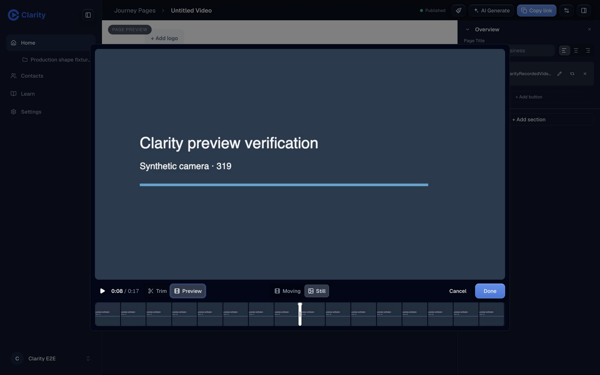
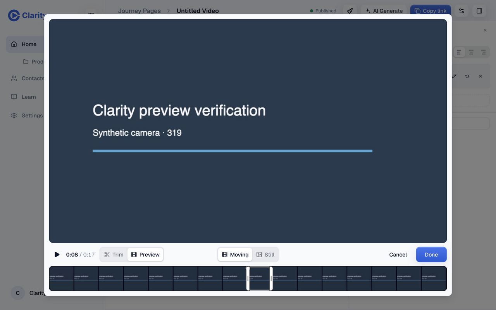

PR 1366 · Saved preview follow-up · 7 October 2026
Moving stays selected after saving
A reopened editor could adopt its previous cached selection. If the page had just saved Still, the editor could show Moving already selected. Clicking Moving then did nothing, and Done left the page showing the still image.
The dialog now reads current data each time it opens. Only a successful response from that opening can replace the asset supplied by the page or library.
Verified on the deployed PR preview
Verified head aaaa087e488bd77ae22223f5bad62172a145f0a3
Pull request · Open the PR app · Earlier controls verification
Before
On head 418c84cae, saving Moving rendered an animated page image for 8.579–9.579 seconds. Reopening immediately showed the old Still selection. The reverse direction also reproduced: saving Still and reopening showed Moving, making a subsequent Moving click a no-op.

After
Saving Still now reopens with Still selected. Switching to Moving and saving updates the loaded page image to the selected animated range. Reopening shows Moving. Reloading and reading the asset API confirm the same saved range, 8.579–9.579 seconds. An independent pass repeats both directions from the library and page editor, confirms loaded GIF/WebP previews, and restores the synthetic fixture.

Regression checks
The cached Moving → saved Still → choose Moving test failed on the previous head with expected true, received false. It passes with the fix. Separate tests cover a failed refresh and adoption of a newer server choice.
All 3,317 editor tests pass. Build and typecheck, scoped lint, diff check, security scan, and independent code review pass. Existing bundle size and function length warnings remain.
Prove It Works: reproduce saving and reopening on the deployed app. Laziness Protocol: fix the query adoption in the shared dialog, without adding another cache or persistence layer.
The first deployment smoke run found an old unpublished test fixture. Publishing that synthetic fixture through the preview app restored its public page; CI was rerun. No production or staging changes.